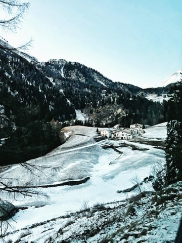

Japan / Tokyo
Japan / Tokyo
Tokyo after Kyoto, Fuji, cats, and city wandering
A useful Tokyo chapter for a trip that moved between food, hotel comfort, day tours, and small city stops.
Open TokyoFood / Travel / Little References
NutNibbles is my personal archive of travel chapters and honest food notes: the places worth remembering, the meals worth returning for, and the small details that make planning easier later.

Start Here
Country hubs are best for trip planning. Food notes are best when one meal deserves its own reference page.
Start here for Sapporo snow, Osaka nights, Kyoto kimonos, Tokyo food, and the Japan meals linked along the way.
UK / Scotland 2023A slower route through London, English road stops, Scotland, and Edinburgh, organized as chapter-style travel notes.
Food NotesUse this when you want food references first: full reviews, comfort stops, casual Japan meals, and Jakarta dinners.
Country hubs, city chapters, route notes, and photo-led travel stories.
FoodSpecial-occasion reviews, Japan food stops, casual meals, snacks, and desserts.
Featured Stories
Japan / Tokyo
A useful Tokyo chapter for a trip that moved between food, hotel comfort, day tours, and small city stops.
Open Tokyo Japan / Sapporo
Japan / Sapporo
The winter chapter with ramen, seafood, snow parks, night views, zoo stops, and the strongest cold-weather atmosphere.
Open Sapporo Japan / Osaka
Japan / Osaka
A city chapter for views, casual meals, night garden lights, curry comfort, and a more relaxed Osaka rhythm.
Open Osaka Jakarta / Fine Dining
Jakarta / Fine Dining
A special-occasion dinner note built for readers deciding whether August is worth saving for a date or birthday.
Read August Jakarta / Birthday Dinner
Jakarta / Birthday Dinner
A personal full review of a cozy, room-to-room tasting menu experience that felt special without feeling stiff.
Read Kindling Scotland / Highlands
Scotland / Highlands
The UK/Scotland story at its most atmospheric: grey weather, long roads, whisky rooms, and quiet countryside texture.
Open HighlandsBrowse by Mood
Use these entry points when you already know the feeling you want: snow, comfort food, a date-night dinner, or a slower road chapter.
Best when you want the cold-weather side of the Japan trip first.
Special DinnersStart with the full reviews when the meal itself is the occasion.
Comfort FoodUseful for quick references, casual stops, and food memories that do not need a long review.
Slow RoutesFor travel notes that move by mood and sequence instead of single-city checklists.
Building Next
For now, NutNibbles stays rooted in trips and meals I actually want to remember. Curated maps, tighter guide pages, and more practical planning references may come later.
The useful part starts here: honest context first, pretty photos second, and enough structure that the notes are easy to return to.